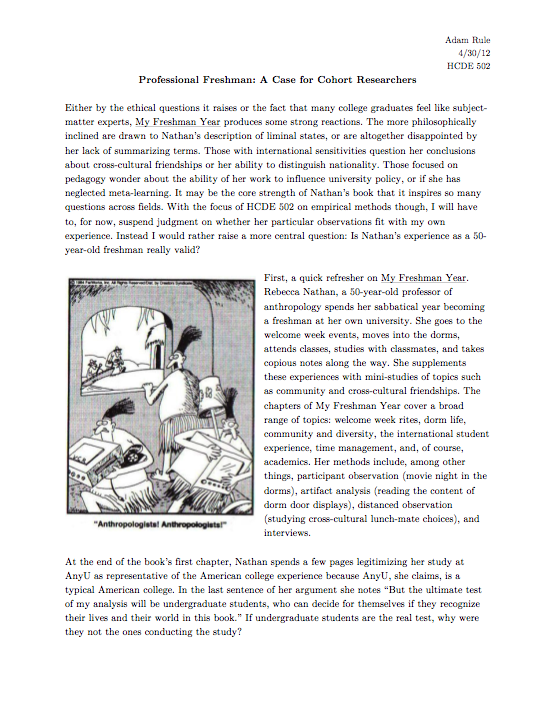

Discussion Paper
A key aspect of this course was learning to discuss research with peers. Twice over the course of the quarter I composed a 500-word paper related to the readings for that week. This paper was meant to prompt discussion about course topics and I lead two 25-minute discussion periods with classmates around the topics presented in my discussion paper.
This particular paper examined the work of Rebecca Nathan in her controversial ethnography of college Freshman, My Freshman Year. In the paper I praise Nathan's book for the number and quality of the questions it raises. Yet, I question the ecological validity of her work; whether a 50-year old would be able to relate to 18-year old students. Might students be shaping their behavior around Nathan?
Beyond critiquing Nathan's work, I use the paper to raise broader questions about ethnographic research. This paper demonstrates my ability to prompt and lead discussion about research topics as well as transcend the individual article under examination and think about broader research themes.

acrule [at] uw [dot] edu
© 2012 Adam Rule